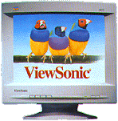

Monitor
 |
Šta sve morate znati o monitoru pre
nego što ga prikljuèite na elektriènu mrežu i
kompjuter. Korisna uputstva i za stare korisnike. |
- Važna uputstva za
korišæenje monitora
- Za sluèaj
kvara
- Kako
instalirati monitor
- Karakteristike
Velièina monitora, veæ prema nameni, može biti od 5.25 x
3.5 inèa pa do dijagonale od 29 inèa.
Važna uputstva za korišæenje
monitora
Pre prikljueivanja pažljivo proèitajte SVE instrukcije.
- Nemojte postavljati monitor na nestabilne nosaèe,
stolove ili police. Monitor može pasti i povrediti osobu
koja ga koristi a pored toga se može i jako oštetiti.
- Otvori sa strane monitora i sa gornje strane ili odozdo
namenjeni su samo ventilaciji elektronike koja se nalazi
unutra. Da se monitor nebi pregrejavao morate otvore
ostaviti nepokrivenim a posebno ne pored izvora toplote.
Monitor ne smete stavljati u zatvorene kutije ili police
ukoliko niste obezbedili ventilaciju.
- Nemojte da koristite monitor blizu vode, èesme za vodu,
sudopere ili u vlažnim prostorijama.
- Monitor prikljuèite na elektriènu mrežu èiji napon
odgovara oznaèenom na poleðini monitora. Ukoliko niste
sigurni konsultujte isporuèioca monitora ili struènjaka
za elektriènu energiju.
- Monitor je snabdeven naponskim kablom sa tri žice. Treæa
žica namenjena je uzemljenju monitora prvenstveno radi
vaše zaštite a zatim za pravilan rad monitora i
kompjutera. Nemojte povezivati monitor i kompjuter na
elektriènu mrežu koja nema uzemljenje ili je uzemljenje
loše uraðeno.
- Kabl kojim povezujete monitor sa elektriènom mrežom
smestite tako da se niko ne može spotaæi o njega ili
preko njega postaviti druge predmete i ureðaje.
- Ako monitor prikljuèujete na elektrienu mrežu preko
produžnog kabla prethodno proverite da li ukupna snaga
prikljuèenih potrošaèa elektriene energije ne prelazi
vrednost oznaèenu na produžnom kablu. Ukoliko je ukupna
snaga jednaka ili veæa od propisane, može doæi do
pregorevanja kabla a samim tim i do izazivanja požara
ili strujnog udara.
- Ispoštujte sva upozorenja koja su naznaèena na pozadini
monitora.
- Nemojte koristiti dodatke koji nisu propisani od strane
proizvoðaèa ili isporuèioca monitora. Takvi dodaci
mogu prouzrokovati razna ošteæenja. Npr. zvuènici koji
se lepe sa strane monitora.
- Ukoliko koristite zaštitne prekrivaèe monitora,
prekrivajte ga tek pošto se ohladi (do temperature sobe),
da ne bi došlo do kondezacije.
- Nikada ne gurajte (i ne dozvolite drugima da to urade),
predmete u otvore za ventilaciju monitora. Ti predmeti
mogu dodirnuti ili kratko spojiti visokonaponske taèke
unutar monitora i izazvati strujni udar ili požar.
- Pre bilo kakvog èišæenja monitora, prvo ga iskljuèite
iz elektriène mreže. Nemojte koristiti teèna sredstva
za èišæenje. Koristite samo vodom navlaženu pamuènu
krpu.
- Kao meru predostrožnosti monitor iskljuèite iz elektriène
mreže kada poènu vremenske neprilike ili ako planirate
da ga ne koristite duže vreme. To æe Vaš monitor
zaštiti od eventualnih strujnih udara.
Za sluèaj kvara
Ne pokušavajte, u sluèaju kvara, sami da servisirate
monitor. Obratite se isporuèiocu za vreme garantnog roka ili
ovlašæenom servisu po isteku istog.
U sledeæim sluèajevima se obavezno obratite servisu:
- Kada je naponski kabl ili utikaè na koji prikljuèujete
monitor, ošteæen ili izgoreo.
- Ako je u monitor na bilo koji naèin dospela neka teènost
ili praškasta supstanca.
- Ako monitor, pored pridržavanja uputstava, ne radi
ispravno.
- Ako je monitor pao ili je kuæište monitora ošteæeno
na bilo koji naèin.
- Kada monitor pokazuje oèigledne nedostatke.
Podešavajte samo kontrolne potenciometre koji su navedeni u
uputstvu za rukovanje monitorom koji ste Vi kupili. Ne pridržavanje
tih uputstava može dovesti do ošteæenja monitora.
Ukoliko su Vam potrebni delovi za zamenu dotrajalih, uverite
se da æe u servisu koristiti delove koji su odgovarajuæi.
Neodgovarajuæe zamene (po karakteristikama delova), mogu
proizvesti drugi kvar ili trajno ošteæenje i posle dužeg
vremena.
Posle opravke monitora, zamolite servisera da Vas posavetuje
za dalje korišæenje i da Vam pokaže kako monitor radi posle
intervencije.
Kako instalirati monitor
Iskljuèite kompjuter i sve pripadajuæe ureðaje koji su
eventualno povezani sa kompjuterom.
- Povežite kabl za video signal, koji ide iz monitora, sa
odgovarajuæim konektorom na kompjuteru. Vodite raèuna o
tome da konektor na kraju kabla koji ide iz monitora,
mora bez otpora skliznuti u konektor koji se nalazi sa
zadnje strane kompjutera. U svakom drugom sluèaju nešto
nije u redu.
- Pritegnite šrafove na kablu za video signal (koji ide iz
monitora), tako da se konektor ne može sam odvojiti od
konektora na kompjuteru.
- Kada ste prethodne instrukcije pravilno izvršili,
prikljuèite naponski kabl u ležište u monitoru a drugi
kraj kabla sa izvorom struje. Napon elektriene mreže
mora biti odgovarajuæi, kako je to oznaèeno na poleðini
monitora.
- Podesite sve kontrolne potenciometre (ili digitalne
komande) na prednjoj strani monitora u srednji položaj
(pozicija izme?u krajnjeg levog i krajnjeg desnog
polo?aja).
- Ukljueite glavni prekidae u polo?aj ON. Ukljueite
kompjuter i posle par sekundi na ekranu monitora pojaviae
se slika. Sledeai siMBole koji se nalaze pored kontrolnih
potenciometara ( slika 2a ), podesite osvetljenost,
kontrast i velieinu slike kako to Vama odgovara.
- Ako neki od prethodno navedenih instrukcija niste mogli
da izvršite, obratite se isporueiocu ili ovlašaenom
servisu.
Karakteristike
Primera radi navešaemo podatke za tri tipa DAEWOO monitora.
| |
CMC-1418AD
|
CMC-1424S
|
CMC-1420AVG
|
| TIP |
SVGA
|
XGA
|
| dijagonala |
14" (
13,3" korisne površine )
|
| dimenzije slike |
250 x 187
mm ( 274 x 204 mm )
|
| non interlaced |
800 x 600
|
1024 x 768 na 60 Hz
|
| velieina taeke |
0.28 mm
|
| širina opsega |
40MHz
|
45 MHz
|
60 MHz
|
| vertikalna frekv. |
50 - 90 Hz
|
47 - 100 Hz
|
50 Hz - 90 Hz
|
| horizontalna frekv. |
31,47 kHz / 35,5 kHz /
37,8 kHz
|
30 - 40 kHz
|
31,5 kHz / 35,1 - 35,6
kHz / 37,8 kHz / 48,36 kHz
|
| napajanje |
100 - 240 V
AC, 50/60 Hz
|
| potrošnja |
|
75 W
|
80 W
|